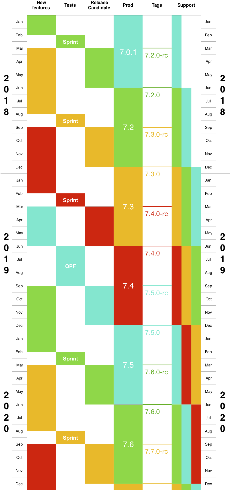

The versioning strategy at CERFACS is not perfectly homogeneous. However, tools supported and released by COOP tend to follow the semantic versioning strategy. This implies that code versions always consist of exactly 3 numbers X.Y.Z:
- X is the major version number. This rarely changes, as it implies no backwards compatibility with previous versions.
- Y is the minor version. This is incremented between OpenTEA releases (but not necessarily), when new features are introduced into the code. This increment should not break backwards compatibility of the code. The GUI however is not guaranteed to be compatible between versions, as a GUI is associated to a version of the code.
- Z represents patches for bug fixes, configuration updates, and all other changes needed for continued operation. These do not break backwards compatibility and cannot introduce new features in the code.
Small tools
For many tools and small codes, the increases in versions will occur when needed, as features are requested. Indeed many tools do not evolve quickly enough to receive an evolution for each OpenTEA release.
AVBP
Large codes such as AVBP however are under constant development. Each version undergoes the following steps:
- features are implemented through internal development
- development is paused as tests are performed. These tests are:
- a one month test sprint for most versions
- once every 2 years (4 versions) a “QPF campaign” occurs
- a release candidate version is tagged and distributed to all AVBP customers. A 3 month period is given for all feedback.
- the version is finally considered stable.
Note that “QPFs”, a.k.a Quality Program Forms are an long series of analytical test cases that the code is compared against. AVBP users can access these online.
The COOP team provides a development timeline, which is given below for the 3 year period 2018 - 2020.
